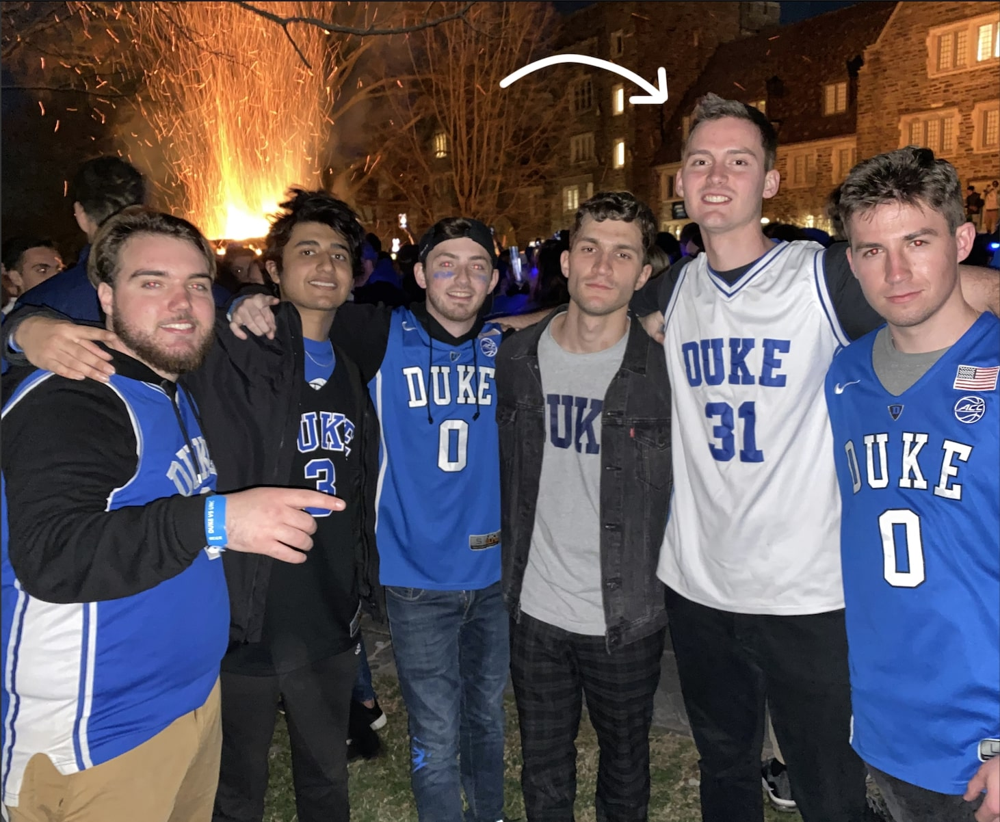

About Me
I'm a rising senior at Duke double majoring in Statistics and Computer Science! I'm a driven learner with experience ranging from Software Engineering at Microsoft (and at a startup) to Academic Research in Machine Learning.
My interests vary across Data Science and Software, but overall I'm interested in making the world a better place through technology.

Snapshots 📸
Here are some glimpses of my projects and experiences. Check out my Github for more info!
Upcoming ⌚️
Case Studies with imperfect, real-world data
- Survival Analysis of World Leaders
- Affect Detection using Wearables
- Predicting November Elections!
- Analysis of US Bike Share Systems